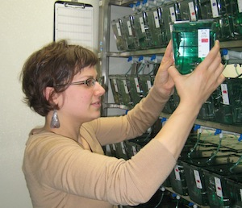

 MicroRNAs (MiRNA) are a class of non-coding RNAs that are ~22 nucleotide, single stranded molecules characterized by a hairpin structure. They have been identified as important endogenous post-transcriptional regulators controlling expression of approximately 60% of mammalian genes. Following miRNA transcription and processing, one strand of the mature miRNA is incorporated into the RNA induced silencing complex and guided to the 3` UTR of its target mRNA. Binding of miRNA to its complimentary sites on target mRNA is followed by either de-adenylation and/or translational repression of target mRNAs leading to gene silencing. My projects are centered on elucidating the role of miRNAs in two different biological contexts- developmental toxicity and epimorphic tissue regeneration.
NIEHS Postdoctoral Fellow
Environmental and Molecular Toxicology
Oregon State University, Corvallis, OR
October 2008-present
Research Mentor: Robert L. Tanguay
Doctorate of Philosophy
Curriculum in Toxicology
University of North Carolina at Chapel Hill, NC
August 2008
Research Mentor: James M. Samet
Bachelor of Science with Honors in Molecular and Microbiology
University of Central Florida, Orlando, FL
June 2003
Tal TL, Franzosa JA, Tanguay RL. Molecular Signaling Networks That Choreograph Epimorphic Fin Regeneration in Zebrafish - A Mini-Review. Gerontology. 2009 Nov 18. [Epub ahead of print] PubMed PMID: 19923791.
Samet JM and Tal TL. Toxicological disruption of signaling homeostasis: tyrosine phosphatases as targets. Annu Rev Pharmacol Toxicol.2010;50:215-35.
Tal TL, Simmons S, Silbajoris R, Dailey L, Cho SH, Ramabhadran R, Linak W, Reed W, Bromberg PA, Samet JM. Differential transcriptional regulation of IL-8 expression by human airway epithelial cells exposed to diesel exhaust particles. Toxicol Appl Pharmacol. [Epub ahead of print] PubMed PMID: 19914270.
Silbajoris R, Huang JM, Cheng WY, Dailey L, Tal TL, Jaspers I, Ghio AJ, Bromberg PA, and Samet JM. Nanodiamond particles induce IL-8 expression through a transcript stabilization mechanism in human airway epithelial cells. Nanotoxicol. 2009; 3, 152-160.
Tal TL, Bromberg PA, Kim Y, Samet JM. Epidermal growth factor receptor activation by diesel particles is mediated by tyrosine phosphatase inhibition. Toxicol Appl Pharmacol. 2008 Dec 15;233(3):382-8. Epub 2008 Sep 26. PubMed PMID: 18926838.
Kim YM, Cao D, Reed W, Wu W, Jaspers I, Tal TL, Bromberg PA, Samet JM. Zn2+-induced NF-kappaB-dependent transcriptional activity involves site-specific p65/RelA phosphorylation. Cell Signal. 2007 Mar;19(3):538-46. Epub 2006 Aug 22. PubMed PMID: 17008051.
Cao D, Tal TL, Graves LM, Gilmour I, Linak W, Reed W, Bromberg PA, Samet JM. Diesel exhaust particulate-induced activation of Stat3 requires activities of EGFR and Src in airway epithelial cells. Am J Physiol Lung Cell Mol Physiol. 2007 Feb;292(2):L422-9. Epub 2006 Oct 6. PubMed PMID: 17028263.
Tal TL, Graves LM, Silbajoris R, Bromberg PA, Wu W, Samet JM. Inhibition of protein tyrosine phosphatase activity mediates epidermal growth factor receptor signaling in human airway epithelial cells exposed to Zn2+. Toxicol Appl Pharmacol. 2006 Jul 1;214(1):16-23. Epub 2006 Jan 10. PubMed PMID: 16410015.
Tal TL, Sengupta, S., and Tanguay, R.L. Zebrafish Fin Regeneration; Making the Cut. Zebrafish: Methods for Assessing Drug Safety and Toxicity. Accepted.
| Title | Organization | Location | Year |
|---|---|---|---|
| Molecular Biology Specialty Section Postdoctoral Research Award - First Place | Society of Toxicology | Salt Lake City, UT | 2010 |
| Neurotoxicology Specialty Section Postdoctoral Poster Award - Second Place | Society of Toxicology | Salt Lake City, UT | 2010 |
| NIEHS Postdoctoral Fellow | Department of Environmental and Molecular Toxicology | Oregon State University | 2008-2010 |
| Inhalation Specialty Section Graduate Student Award | Society of Toxicology | Seattle, WA | 2008 |
| Graduate Student Travel Award | Society of Toxicology | Seattle, WA | 2008 |
| Graduate Education Advancement Board Impact Award | University of North Carolina at Chapel Hill | Chapel Hill, NC | 2007 |
| NIH National Graduate Student Research Festival Award | National Institute of Health | Chapel Hill, NC | 2007 |
| North Carolina Graduate Student Award | Society of Toxicology | Research Triangle Park, NC | 2006 |
| Metals Specialty Section Student Award | Society of Toxicology | San Diego, CA | 2006 |
| North Carolina Graduate Student Award | Society of Toxicology | Chapel Hill, NC | 2005 |
| Florida Bright Future Scholarship | State of Florida | Florida | 1998-2003 |
| Honors College | University of Central Florida | Gainesville, FL | 1998-2003 |